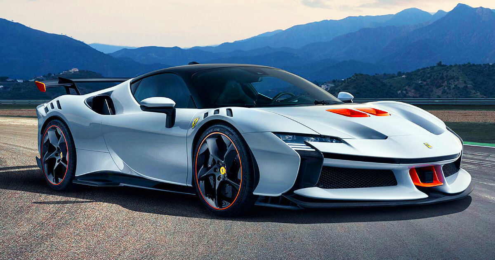
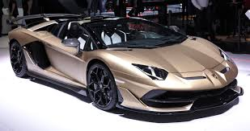
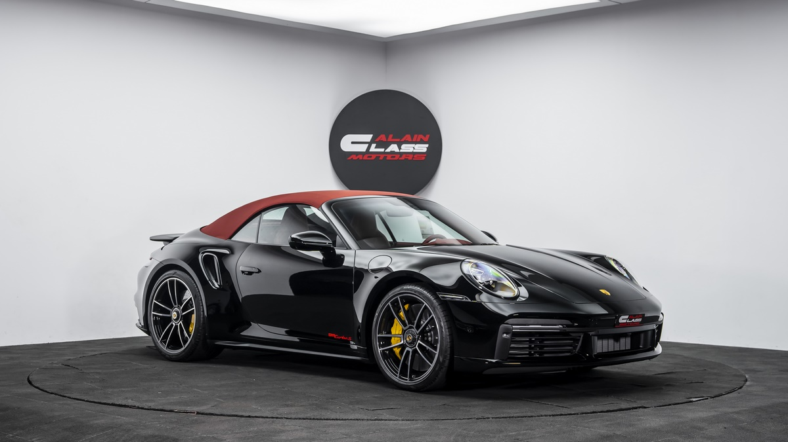
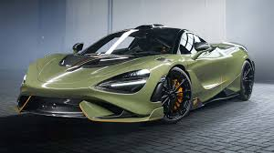
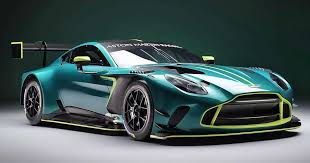

Top 5 Carros Deportivos del 2024
1. Ferrari SF90 Stradale
El Ferrari SF90 Stradale es un superdeportivo híbrido con 1000 caballos de fuerza que redefine el concepto de velocidad.
2. Lamborghini Aventador SVJ
El Lamborghini Aventador SVJ es un ícono en el mundo de los superdeportivos, conocido por su diseño agresivo y motor V12.
3. Porsche 911 Turbo S
El Porsche 911 Turbo S ofrece un equilibrio perfecto entre rendimiento y comodidad, con una aceleración impresionante.
4. McLaren 765LT
El McLaren 765LT es ligero y rápido, con un enfoque en la aerodinámica y el rendimiento en pista.
5. Aston Martin Vantage
El Aston Martin Vantage combina elegancia y potencia, siendo uno de los carros deportivos más atractivos del mercado.
Leer más